전자기사 (2016-10-01 기출문제)
1과목: 전기자기학
1. 상자성체에서 자화율(magnetic susceptibility)는?
- X=0
- X=1
- X
- X＞0
(정답률: 58%)

2. 그림과 같이 단면적이 균일한 환상철심에 권수 N1인 A코일과 권수 N2인 B코일이 있을 때, A코일의 자기 인덕턴스가 L1(H)이라면 두 코일의 상호 인덕턴스 M(H)는? (단, 누설자속은 0이다.)
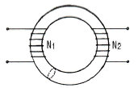
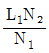
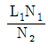
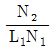
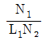
(정답률: 77%)
3. 간격 3m의 평행 무한평면도체에 각각 ±4C/m2의 전하를 주었을 때, 두 도체간의 전위차는 약 몇 V인가?
- 1.5×1011
- 1.5×1012
- 1.36×1011
- 1.36×1012
(정답률: 39%)
4. 그림과 같이 평행한 무한장 직선도선에 I(A), 4I(A)인 전류가 흐른다. 두 선 사이의 점 P의 자계의 세기가 0이라고 하면 a/b는?
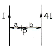
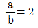
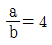
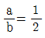
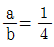
(정답률: 80%)
5. 파라핀유 속에서 5cm의 거리를 두고 5μC과 4μC의 점전하가 있다. 두 점전하 사이에 작용하는 힘은 약 몇 N 인가? (단, 파라핀유의 비유전율은 2.2라고 한다.)
- 8.57
- 32.7
- 65.5
- 163.6
(정답률: 50%)
6. 그림과 같은 영구자석과 아라고판(Arago plate)에 대한 설명으로 틀린 것은?
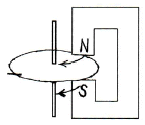
- 영구자석을 아라고판과 나란히 아라고판의 회전축을 중심으로 원 둘레와 나란히 이동시키면, 아라고판이 영구자석의 이동방향을 따라 회전한다.
- 아라고 원판을 아라고판의 회전축 주위로 회전시키면, 영구자석에 의하여 아라고판에 맴돌이 전류(eddy current)가 발생하여 제동작용이 생긴다.
- 영구자석을 아라고 판과 나란히 아라고판의 회전축을 중심으로 그림과 같이 나란히 이동시키면, 항상 축의 중심에서 아라고판의 원둘레 방향으로 전류가 발생한다.
- 영구자석을 아라고판의 회전축을 중심으로 움직이는 대신 아라고판상에 이동자계를 만들어주어도 자계의 이동방향을 따라 아라고판이 회전한다.
(정답률: 62%)
7. 진공 중에 있는 두 점자극 +m(Wb)와 -m(Wb)가 r(m) 거리에 있을 때, 두 점자극을 잇는 직선의 중앙점에서 자계의 크기(AT/m)는?
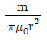
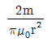
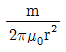
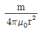
(정답률: 34%)
8. 반지름 50cm인 서로 나란한 두 원형코일을 1mm 간격으로 동축 상에 평행 배치한 후 각 코일에 100A의 전류가 같은 방향으로 흐를 때 코일 상호간에 작용하는 인력은 약 몇 N 인가?
- 3.14
- 6.28
- 31.4
- 62.8
(정답률: 17%)
9. 투자율 μ(H/m)에서 길이 ℓ(m), 간격 d(m)인 두 평행도선 사이의 상호인덕턴스(H)는? (단, ℓ≫d이다.)
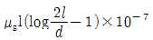
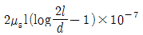
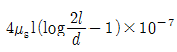
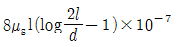
(정답률: 58%)
10. 어떤 코일의 전류와 자속의 특성이 그림과 같이 주어졌다고 한다. 전류가 25A이면 이 코일에 저장되는 에너지는 몇 J 인가?(오류 신고가 접수된 문제입니다. 반드시 정답과 해설을 확인하시기 바랍니다.)
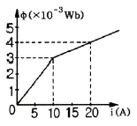
- 31.25×10-3
- 35.75×10-3
- 38.75×10-3
- 41.25×10-3
(정답률: 32%)
11. 정전계에 대한 설명 중 틀린 것은?
- 전기력선은 전하가 없는 곳에서는 서로 교차한다.
- 단위 전하에서 나오는 전기력선의 수는 1/Є0개이다.
- 도체에 주어진 전하는 도체표면에만 분포한다.
- 중공도체(中空導體)에 준 전하는 외부 표면에만분포하고 내부표면에는 존재하지 않는다.
(정답률: 67%)
12. 비유전율 εs=80, 비투자율 μs=1인 전자파의 고유임피던스는 약 몇 Ω 인가?
- 21
- 42
- 80
- 160
(정답률: 65%)
13. 공극의 겉넓이가 Sa=4.26×10-2m2이고, 길이가 la=5.6㎜인 직류기에 있어서 공극의 자기저항은 약 몇 AT/Wb 인가?
- 10.5×102
- 10.5×10-2
- 1.⑤×105
- 1.⑤×10-5
(정답률: 80%)
14. 다음 식 중 틀린 것은?
- 가우스(Gauss)의 정리 : div D=ρ
- 포아송(Poisson) 방정식 :
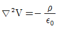
- 스토크스(Stokes)의 정리 :
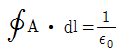
- 발산정리 :
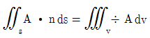
(정답률: 48%)
15. Є1 ＞ Є2인 두 유전체의 경계면에 전계가 수직으로 입사할 때 경계면에 작용하는 힘은?
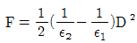
의 힘이 Є1에서 Є2로 작용한다.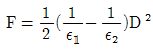
의 힘이 Є2에서 Є1으로 작용한다.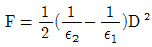
의 힘이 Є2에서 Є1으로로 작용한다.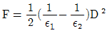
의 힘이 Є1에서 Є2로 작용한다.
(정답률: 37%)
16. 전기량이 0.2C인 점전하가 전계 E=5j+k(V/m) 및 자속밀도 B=2j+5j(Wb/m2)인 전자계에 v=2i+3j(m/s)의 속도로 돌입할 때 점전하에 작용하는 힘(N)은?
- i+j-2k
- 2i-j+5k
- 3i-j+k
- 5i+j-3k
(정답률: 38%)
17. 다음 중 저항률이 가장 작은 것은?
- 동
- 철
- 수은
- 알루미늄
(정답률: 66%)
18. 동일한 금속 도선의 두 점 사이에 온도차를 주고 전류를 흘리면 열의 발생 또는 흡수가 일어나는 현상은?
- 펠티에(Peltier) 효과
- 볼타(Volta) 효과
- 제벡(Seebeck) 효과
- 톰슨(Thomson) 효과
(정답률: 61%)
19. 환상철심 코일에 5A의 전류를 흘려 2000AT의 기자력을 생기게 하려면 코일의 권수(회)는?
- 10000
- 500
- 400
- 250
(정답률: 74%)
20. 진공 중에서 내구의 반지름 a=3cm, 외구의 내반지름 b=9cm인 두 동심구 사이의 정전용량은 몇 pF 인가?
- 0.5
- 5
- 50
- 500
(정답률: 34%)
2과목: 회로이론
21. R-C 병렬회로에 60hz, 100V를 가하였을 때 유효전력 800W, 무효전력 600Var이면 저항R[Ω], 정전용량 C[μF]의 값은?
- R=12.5, C=159
- R=15.5, C=180
- R=18.5, C=189
- R=20.5, C=219
(정답률: 48%)
22. 전류 i 방향으로의 2Ω 양단에서의 전압강하는?
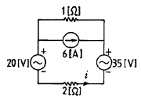
- 2
- 4
- 6
- 8
(정답률: 56%)
23. R=20Ω, L=0.⑤H, C=1μF인 R-L-C 직렬회로에서 Q는 약 얼마인가?
- 25.2
- 17.2
- 15.2
- 11.2
(정답률: 43%)
24. 크기 A인 임펄스의 스펙트럼(amplitude sprctrum)은?
- Ae-jωt0
- 1
- A
- Aejωt0
(정답률: 37%)
25. 다음 회로에서 VO(t)의 실효값은?
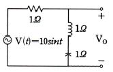
- 0V
- 10V
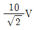
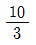
(정답률: 53%)
26. 다음 설명이 나타내는 것은?
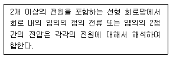
- 노튼 정리
- 보상 정리
- 테브난 정리
- 중첩의 정리
(정답률: 60%)
27. 다음 그림과 같은 4단자 회로망의 4단자 정수에서 C는?
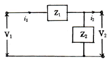
- 1/Z2
- 1
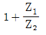
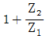
(정답률: 50%)
28. 함수 f(t)=sinωt+2cosωt의 라플라스 변환은?
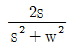
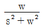
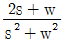
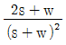
(정답률: 42%)
29. R-C 직렬회로에 직류전압 5V를 인가하고, t=0에서 스위치를 ON 한다면 커패시터 양단에 걸리는 전압 Vc 는? (단, R=1Ω, C=1F 이다.)
- -5e-t
- 5e-t
- 5(1-e-t)
- 5(1-et)
(정답률: 61%)
30. 필터의 차단 주파수는 출력 전압이 입력 전압의 몇 배인 주파수로 정의하는가?
- √2배
- 1/√2배
- 1/2배
- 1/2√2배
(정답률: 48%)
31. 다음 그림과 같은 파형의 Laplace 변환은?
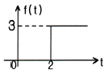
- 3
- 3/s
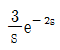
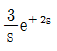
(정답률: 67%)
32. 5H의 인덕터에 v(t)=20√2 cos(ωt-30°)V의 전압을 인가하였을 때 인덕터 흐르는 전류 i(t)의 순시값은? (단, ω=100[rad/s]이다.)
- i(t)=0.04√2cos(100t-120°)
- i(t)=0.02√2cos(100t-120°)
- i(t)=0.04√2cos(100t+60°)
- i(t)=0.02√2cos(100t+60°)
(정답률: 43%)
33. 다음 회로에서 스위치 SW를 닫은 후 t가 2초일 때 회로에 흐르는 전류는 몇 A 인가?
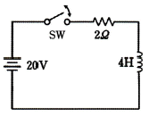
- 3.68
- 4.52
- 6.32
- 8.12
(정답률: 43%)
34. v(t)=cos2πf0t을 Fourier 변환한 V(f)를 구하면?
- V(t)=δ(f-f0)+δ(f+f0)
- V(t)=π(f-f0)+δ(f+f0)
- V(t)=1/2(f-f0)+δ(f+f0)
- V(t)=2π(f-f0)+δ(f+f0)
(정답률: 20%)
35. R=20Ω, XL=10Ω, XC=5Ω을 병렬로 접속한 회로의 어드미턴스 Y[℧]은 얼마인가?
- 0.06+j0.1
- 0.⑤+j0.1
- 0.06-j0.1
- 0.⑤-j0.1
(정답률: 25%)
36. Vt=Vmsin(ωt+50°)와 It=Imcos(ωt-80°)의 위상차는?
- 10°
- 20°
- 30°
- 40°
(정답률: 34%)
37. 입력과 출력신호를 각각 x(t), y(t)라고 할 때, 아래 미분방정식의 전달함수는? (단, y(0)=0이다.)
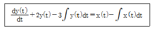
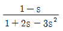
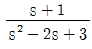
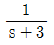
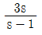
(정답률: 34%)
38. 10μF의 커패시터에 10V, 50Hz의 교류전압을 인가할 때 무효 전력은 몇 Var 인가?
- π/10
- π
- 10π
- 100π
(정답률: 53%)
39. 그림과 같은 시간함수를 라플라스 변환하면?
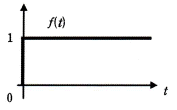
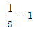
- 1/s
(정답률: 59%)
40. 4단자망의 파라미터에 대한 설명으로 틀린 것은?
- h 파라미터에서 h12와 h21는 차원(단위)이 없다.
- ABCD 파라미터에서 A와 D는 차원(단위)이 있다.
- h 파라미터에서 h11은 임피던스의 차원을 h22는 어드미턴스의 차원(단위)을 갖는다.
- ABCD 파라미터에서 B는 임피던스의 차원(단위)을 C는 어드미턴스의 차원(단위)을 갖는다.
(정답률: 32%)
3과목: 전자회로
41. 불대수에서 (A++B)(A+C)와 등식이 성립하는 것은?
- ABC
- A+B+C
- AB+C
- A+BC
(정답률: 61%)
42. 동기 3단 2진 카운터 회로를 설계할 때, JK-FF(Flip Flop) 3개와 어떤 게이트 1개를 사용하면 되는가?
- AND
- OR
- NOT
- EX-OR
(정답률: 35%)
43. 다음과 같은 논리회로에 대한 설명으로 틀린것은?
- 입력 A, B, C, D가 모두 0 이면, Y=1 이다.
- 입력 A, B, C, D가 모두 1 이면, Y=0 이다.
- 입력 A, B, C, D에서 1의 상태의 개수가 홀수이면, Y=1 이다.
- 입력 A, B, C, D에서 1의 상태의 개수가 짝수이면, Y=0 이다.
(정답률: 45%)
44. 다음의 클램퍼 회로에서 그림과 같은 입력신호가 주어질 때 출력 파형의 모양은?
(정답률: 34%)
45. 귀환에 관한 설명으로 옳지 않은 것은?
- 귀환된 신호와 본래의 입력과의 위상관계에 있어서 역위상인 경우를 부귀환이라 한다.
- 귀환전압이 출력전류에 비례할 때를 전류귀환이라 한다.
- 귀환전압이 출력전류에 비례하는 경우를 직렬귀환이라 한다.
- 직렬귀환과 병렬귀환이 함께 사용된 것을 복합귀환이라 한다.
(정답률: 59%)
46. 다음 발진 회로에서 발진 주파수는?
- 35.6kHz
- 22.3kHz
- 3.56kHz
- 2.23kHz
(정답률: 39%)
47. 다음 회로에서 Re의 주 역할은? (단, C의 값은 매우 크다.)
- 출력증대
- 동작점의 안정화
- 바이어스 전압감소
- 주파수 대역폭 증대
(정답률: 62%)
48. 다음 회로의 출력전압(VO)의 파형은? (단, Rf는 무시한다.)
(정답률: 59%)
49. 다음 설명 중 래치와 플립플롭을 구분하는 트리거로 옳은 것은?
- 래치는 에지 트리거, 플립플롭은 에지 트리거
- 래치는 에지 트리거, 플립플롭은 레벨 트리거
- 래치는 레벨 트리거, 플립플롭은 에지 트리거
- 래치는 레벨 트리거, 플립플롭은 레벨 트리거
(정답률: 73%)
50. A급 전력 증폭기에서 최대의 출력을 얻기 위하여 필요한 바이어스 조건은?
- 피크 부하전류의 절반
- 피크 부하전류의 2배
- 피크 부하전류
- 차단전압
(정답률: 56%)
51. 아래 그림과 같은 연산증폭기에서 Vi=V1sinωt란 입력이 들어왔을 때 출력전압(Vo)의 값은? (단, R=1MΩ, C=2μF, V1=2V, ω=120π[rad/sec]이다.)
- -480π cos120πt
- -240π cos120πt
- -4cos120πt
- -4π cos120πt
(정답률: 37%)
52. 다음 회로에 대한 설명으로 틀린 것은?
- Darlington 접속이다.
- Emitter follower이다.
- Emitter에 정전압을 인가한다.
- 등가적으로 NPN 트랜지스터와 같다.
(정답률: 55%)
53. 다음 중 불대수의 정리가 성립되지 않는 것은?
- A + B = B + A
- A∙B=A∙(A+B)
- A∙(B+C)=A∙B+A∙C
- A + (B∙C)=(A+B)∙(A+C)
(정답률: 64%)
54. 다음 회로는 BJT의 소신호 등가 모델이다. 여기서 ro와 가장 관련이 깊은 것은?
- Early 효과
- Miller 효과
- Pinchoff 현상
- Breakdown 현상
(정답률: 53%)
55. TTL과 비교하여 CMOS 논리회로의 특징이 아닌 것은?
- 소비전력이 작다.
- 잡음여유도가 크다.
- 높은 입력 임피던스이다.
- 전달 지연 시간이 짧다.
(정답률: 20%)
56. 4변수 카르노 맵을 이용하여 정리한 논리식 중에서 틀린 항은? (문제 오류로 실제 시험에서는 1, 2, 4번이 정답처리 되었습니다. 여기서는 1번을 누르면 정답 처리 됩니다.)
(정답률: 60%)
57. hoe가 50×10-6[℧]인 트랜지스터를 200[Ω]의 부하와 정합시키려면 정합 변압기의 권선비(turnratio)는?
- 5 : 1
- 10 : 1
- 50 : 1
- 100 : 1
(정답률: 37%)
58. 상승시간이 0.175μs인 연산증폭기를 이용하여 20kHz의 정현파 신호를 증폭하려고 할 때 최대로 얻을 수 있는 전압이득은 약 몇 dB 인가? (단, 이득 대역폭 적(G∙B)=0.35/상승시간이다.)
- 10
- 20
- 30
- 40
(정답률: 29%)
59. 다음 그림은 터널 다이오드(Tunnel Diode) 전압-전류 특성곡선이다. 발진이 일어날 수 있는 영역은?
- A
- B
- C
- D
(정답률: 67%)
60. 다음 회로의 명칭은 무엇인가? (단, R1=R2=R3=RF이다.)
- 반전 증폭회로
- 비반전 증폭회로
- 차동 증폭회로
- 미분 회로
(정답률: 40%)
4과목: 물리전자공학
61. 운동 전자의 드브로이 파장이 3×10-10[m]인 경우 전자의 속도는? (단, 프랭크 상수 h=6.6×10-34[Jㆍsec]전자의 질량 m=9.1×10-31[kg] 이다.)
- 12×104[m/s]
- 12×105[m/s]
- 2.4×106[m/s]
- 16×107[m/s]
(정답률: 68%)
62. 파울리(Pauli)의 배타 원리가 적용되는 통계 방식의 종류는?
- Maxwell-Boltzmann 통계
- Bose-Einstein 통계
- Fermi-Dirac 통계
- Gausian 통계
(정답률: 57%)
63. 전자와 정공의 농도(concentration)를 구하는 것에 이용될 수 있는 것은?
- Hall effect
- Tunnel effect
- piezo effect
- photo electric effect
(정답률: 59%)
64. 다음 중 전류 제어용 소자는?
- 3극 진공관
- 접합 트랜지스터
- 접합 전계효과 트랜지스터
- 절연 게이트 전계효과 트랜지스터
(정답률: 48%)
65. 펀치 스루(punch through) 현상에 대한 설명으로 틀린 것은?
- 베이스 중성 영역이 없는 상태이다.
- 펀치스루 전압은 베이스 영역 폭의 제곱에 비례한다.
- 컬렉터 역바이어스의 증가에 의해 발생하는 현상이다.
- 펀치스루 전압은 베이스 내의 불순물 농도에 반비례한다.
(정답률: 34%)
66. pn 접합 다이오드에 역방향 바이어스 전압을 공급할 때의 특징으로 틀린 것은?
- 접합용량이 증가
- 전위장벽이 증가
- 공간전하의 영역 증가
- 공핍층이 증가
(정답률: 50%)
67. 300[K]에서 페르미 준위보다 0.1[eV]만큼 낮은 에너지 준위에 전자가 점유하는 확률은 약 얼마인가?
- 0.02
- 0.1
- 0.7
- 0.98
(정답률: 53%)
68. 재결합 중심(recombination center)의 원인이 되는 설명으로 옳지 않은 것은?
- 결정표면의 불균일
- 순도가 높은 결정
- 결정격자의 결함
- 불순물에 의한 격자 결함
(정답률: 47%)
69. 서미스터(thermistor)에 대한 설명 중 틀린 것은?
- 반도체의 일종이다.
- 온도제어 회로 등에 사용된다.
- 일반적으로 정(+)의 온도계수를 가진다.
- CTR(Critical Temperature Resistor)은 이것을 응용한 것이다.
(정답률: 50%)
70. 순수 반도체가 절대온도 0[K]의 환경에 존재하는 경우 이 반도체의 특성을 가장 바르게 설명한 것은?
- 소수의 정공과 소수의 자유전자를 가진다.
- 금속 전도체와 같은 행동을 한다.
- 많은 수의 정공을 갖고 있다.
- 절연체와 같이 행동한다.
(정답률: 71%)
71. 부성(negative) 저항 특성을 나타내는 다이오드는?
- 터널 다이오드
- 바랙터 다이오드
- 제너 다이오드
- 정류용 다이오드
(정답률: 64%)
72. FET를 단극성 소자라고 하는 이유는?
- 게이트가 대칭인 구조이기 때문이다.
- 전자만으로 전류가 운반되기 때문이다.
- 소스와 드레인 단자가 같은 성질이기 때문이다.
- 다수 캐리어만으로 전류가 운반되기 때문이다.
(정답률: 48%)
73. 전자의 입자와 파동의 이중성을 설명하는 드브로이파(de Broglie wave, 물질파)에 관한 올바른 식은? (단, h: 프랭크 상수, m: 전자의 질량, υ: 속도, λ: 파장이다.)
- λ=(mh)/υ
- λ=υ/(mh)
- λ=m/(hυ)
- λ=h/(mυ)
(정답률: 44%)
74. P 채널 전계효과 트랜지스터(FET)에 흐르는 전류는 주로 어느 현상에 의한 것인가?
- 전자의 확산 현상
- 정공의 확산 현상
- 전자의 드리프트 현상
- 전공의 드리프트 현상
(정답률: 50%)
75. 서로 다른 도체로 폐회로를 구성하고 직류전류를 흐르게 했을 때, 전류의 방향에 따라 서로 다른 도체 사이의 접합의 한쪽은 가열되는 반면, 또 다른 한쪽은 냉각이 되는 효과를 무엇이라 하는가?
- Peltier Effect
- Seebeck Effect
- Zeeman Effect
- Hall Effect
(정답률: 50%)
76. 에너지 Level E가 전자에 의해서 채워질 확률을 f(E)라 했을 때, 에너지 Level E가 정공에 의해서 채워질 확률은?
- f(E)-1
- 1-f(E)
- 1/(f(E)-1)
- 1/(1-f(E))
(정답률: 40%)
77. 접합형 트랜지스터가 스위치로 쓰이는 영역은?
- 포화영역과 활성영역
- 활성영역과 차단영역
- 활성영역과 역할성영역
- 포화영역과 차단영역
(정답률: 65%)
78. 진성반도체에서 온도에 따른 페르미 준위와의 관계로 가장 옳은 것은? (단, 전자와 정공의 유효질량은 같다고 가정한다.)
- 가전자대 쪽으로 접근한다.
- 전도대 쪽으로 접근한다.
- 금지대 중앙으로 접근한다.
- 온도와는 무관하다.
(정답률: 28%)
79. 고속의 전자(이온)가 금속의 표면에 충돌하면 금속 안의 자유전자가 방출되는 현상은?
- 전계 방출
- 열전자 방출
- 광전자 방출
- 2차 전자 방출
(정답률: 48%)
80. 베이스 폭(d)이 0.02mm 이고, 전자의 확산계수(De)가 0.02[m2 /sec]인 트랜지스터의 차단주파수는 약 MHz 인가?
- 1.6
- 16
- 50
- 80
(정답률: 23%)
5과목: 전자계산기일반
81. 4-단계 파이프라인 구조의 컴퓨터에서 클락주기가 1μs일 때, 10개의 명령어를 실행하는데 걸리는 시간은?
- 10μs
- 11μs
- 12μs
- 13μs
(정답률: 46%)
82. Associative 기억장치의 특징에 대한 설명으로 가장 적합하지 않은 것은?
- 별도의 판독회로 구성이 필요없기 때문에 하드웨어 비용이 절감된다.
- 병렬 판독회로가 있어야 한다.
- 번지에 의해서만 접근이 가능한 기억장치보다 정보검색이 신속하다.
- 기억된 정보의 일부분을 이용하여 원하는 정보가 기억된 위치를 알아낸 후 나머지 정보에 접근한다.
(정답률: 32%)
83. 부동소수점 연산에서 정규화의 이유로 가장 타당한 것은?
- 지수의 값을 크게 하기 위해서이다.
- 수의 정밀도를 높이기 위함이다.
- 부호 비트를 생략하기 위함이다.
- 가수부의 비트수를 줄이기 위함이다.
(정답률: 64%)
84. C 프로그램에서 선행처리기에 대한 설명으로 가장 옳지 않은 것은?
- 컴파일하기 전에 처리해야 할 일들을 수행하는 것이다.
- 상수를 정의하는 데에도 사용한다.
- 프로그램에서 '#' 표시를 사용한다.
- 유틸리티 루틴을 포함한 표준 함수를 제공한다.
(정답률: 39%)
85. CPU의 제어ㆍ기억장치에서 주소를 결정하는 방법에 대한 설명으로 가장 옳지 않은 것은?
- 제어 주소 레지스터의 내용을 하나씩 감소시킨다.
- 마이크로 명령에서 지정하는 번지로 무조건 분기한다.
- 상태 비트에 따른 조건부 분기를 한다.
- 매크로 동작 비트로부터 ROM으로의 매핑이 가능하다.
(정답률: 10%)
86. 마이크로프로그램을 이용한 제어 방식의 특징에 대한 설명으로 옳지 않은 것은?
- 구조적이고 임의적인 설계가 가능하다.
- 경제적이며 시스템의 설계비용을 줄일 수 있다.
- 보다 용이한 유지보수 관리가 가능하다.
- 시스템이 간단하여 많은 제어 결정을 필요로 하지 않을 때 유리하다.
(정답률: 74%)
87. 컴퓨터 주기억장치의 용량을 1MB(Mega Byte)의 크기로 구성하려고 한다. 1 바이트가 8 bit이고 Parity bit를 포함한다면 64KB(Kilo Byte) DRAM의 칩이 몇 개가 필요한가?
- 16
- 17
- 128
- 144
(정답률: 22%)
88. 마이크로컴퓨터 내에서 각 장치 간의 정보교환을 위해 필요한 물리적 연결은?
- I/O processor
- Cache
- Bus
- Register
(정답률: 67%)
89. CPU가 명령어를 실행할 때의 메이저 상태에 대한 설명으로 가장 옳은 것은?
- 실행 사이클은 간접주소 방식의 경우에만 수행된다.
- 명령어의 종류를 판별하는 것을 간접 사이클이라 한다.
- 기억장치 내의 명령어를 CPU로 가져오는 것을 인출 사이클이라 한다.
- 인터럽트 사이클 동안 데이터를 기억장치에서 읽어낸다.
(정답률: 67%)
90. 마이크로컴퓨터와 외부의 입ㆍ출력 장치 간의 정보 교환을 수행하는 것은?
- interface unit
- arithmetic unit
- control unit
- interrupt process unit
(정답률: 56%)
91. STACK에 관한 용어 또는 명령어로 가장 관련이 없는 것은?
- FIFO
- PUSH
- POP
- LIFO
(정답률: 56%)
92. CPU가 입ㆍ출력 데이터 전송을 메모리에서의 데이터 전송과 같은 방법으로 수행할 수 있는 입ㆍ출력 제어방식은?
- Interrupt I/O
- Memory-mapped I/O
- Isolated I/O
- Programmed I/O
(정답률: 65%)
93. 64 Kilo Bit DRAM이 몇 개 있어야 128 Kilo Byte의 용량이 되는가?
- 2개
- 4개
- 8개
- 16개
(정답률: 38%)
94. 그림과 같은 JK 플립플롭을 결선하고, 클락펄스를 계속 인가하였을 때의 출력상태는?
- Set 된다.
- Reset 된다.
- Toggle 된다.
- 동작불능 상태가 된다.
(정답률: 57%)
95. 2진수 10111101001를 16진수로 변환시킨 것은?
- 5D9(16)
- AE9(16)
- 5E9(16)
- B59(16)
(정답률: 70%)
96. 시스템 소프트웨어에 대한 설명으로 가장 옳은 것은?
- 라이브러리 프로그램은 응용 프로그래머에게 표준 루틴을 제공한다.
- 언어 프로세서는 기계언어를 사용자 편의로 된 언어로 번역한다.
- 진단 프로그램은 컴퓨터의 고장을 고쳐준다.
- 로더 프로그램은 주기억장치의 내용을 보조기억장치로 보낸다.
(정답률: 40%)
97. DMA(Direct Memory Access)에 관한 설명으로 올바른 것은?
- CPU가 입ㆍ출력을 직접 제어한다.
- 입ㆍ출력 동작을 수행하는 동안에는 프로세서가 다른 일을 하지 못한다.
- 입ㆍ출력 모듈의 인터럽트 신호에 의하여 데이터 전송이 이루어진다.
- CPU가 개입하지 않고 기억장치와 입ㆍ출력 모듈 사이에 데이터 전송이 이루어진다.
(정답률: 65%)
98. 마이크로소프트사에서 디바이스 드라이버의 개발을 표준화시키고 호환성을 가지게 하기 위해 만든 드라이버 모델은?
- ISA
- PCI
- OSC
- WDM
(정답률: 63%)
99. 16×8 ROM을 설계할 때 필요한 게이트의 종류와 그 개수는?
- AND 8개, OR 8개
- AND 8개, OR 16개
- AND 16개, OR 8개
- AND 16개, OR 16개
(정답률: 60%)
100. 순서도(flowchart) 작성 시 주의사항에 대한 설명으로 가장 옳지 않은 것은?
- 모든 문장을 하나의 블록으로 상세히 그린다.
- 되도록이면 선이 교차하지 않게 그린다.
- 적당한 설명을 첨부한다.
- 서브루틴은 가급적 별도로 그린다.
(정답률: 53%)